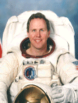

Lyndon B. Johnson Space Center
Houston, Texas 77058
|
National Aeronautics and Space Administration Lyndon B. Johnson Space Center Houston, Texas 77058 |
 |
Biographical Data |
||
NAME: Thomas D. Jones (Ph.D.)
NASA Astronaut
PERSONAL DATA: Born January 22, 1955, in Baltimore, Maryland. Enjoys baseball, hiking, biking, camping, skiing, and recreational flying. An avid reader and author, his favorite subjects are space aviation and American military history.
EDUCATION: Graduated from Kenwood Senior High School, Essex, Maryland, in 1973; received a bachelor of science degree in basic sciences from the United States Air Force (USAF) Academy in Colorado Springs in 1977, and a doctorate in planetary science from the University of Arizona in Tucson in 1988.
ORGANIZATIONS: Member of the American Astronomical Society (Division for Planetary Sciences), the American Geophysical Union, and the Association of Space Explorers.
SPECIAL HONORS: NASA Space Flight Medal (2001, 1996, 1994). NASA Exceptional Service Award (2000, 1997). NASA Outstanding Leadership Medal (1995). Komarov Diploma, Federation Aronautique Internationale (1997, 1995). Phi Beta Kappa, University of Arizona (1988). NASA Graduate Student Research Fellow (1987). Air Force Commendation Medal (1983). Distinguished Graduate and Outstanding Graduate in Basic Sciences, USAF Academy (1977). National Merit Scholar (1973). Eagle Scout (1969).
EXPERIENCE: A Distinguished Graduate of the USAF Academy, Dr. Jones served on active duty as an Air Force officer for 6 years. After pilot training in Oklahoma, he flew strategic bombers at Carswell Air Force Base, Texas. As pilot and aircraft commander of a B-52D Stratofortress, he led a combat crew of six, accumulating over 2,000 hours of jet experience before resigning as a captain in 1983.
From 1983 to 1988 he worked toward a Ph.D. at the University of Arizona in Tucson. His research interests included the remote sensing of asteroids, meteorite spectroscopy, and applications of space resources. From 1989 to 1990, he was a program management engineer in Washington, D.C., at the CIA's Office of Development and Engineering. In 1990 he joined Science Applications International Corporation in Washington, D.C. as a senior scientist. Dr. Jones performed advanced program planning for NASA's Solar System Exploration Division, investigating future robotic missions to Mars, asteroids, and the outer solar system.
After a year of training following his selection by NASA in January 1990, Dr. Jones became an astronaut in July 1991. In 1994 he flew as a mission specialist on successive flights of space shuttle Endeavour. First, in April 1994, he ran science operations on the "night shift" during STS-59, the first flight of the Space Radar Laboratory (SRL-1). Then, in October 1994, he was the payload commander on the SRL-2 mission, STS-68. Dr. Jones next flew in late 1996 on Columbia. Mission STS-80 successfully deployed and retrieved 2 science satellites, ORFEUS/SPAS and the Wake Shield Facility. While helping set a Shuttle endurance record of nearly 18 days in orbit, Dr. Jones used Columbia's robot arm to release the Wake Shield satellite and later grapple it from orbit. His latest space flight was aboard Atlantis on STS-98, in February 2001. Dr. Jones and his crew delivered the U.S. Destiny Laboratory Module to the Space Station, and he helped install the Lab in a series of 3 space walks lasting over 19 hours. The successful addition of Destiny gave the first Expedition Crew the largest space outpost in history and marked the start of onboard scientific research at the ISS. A veteran of four space flights, Dr. Jones has logged over 52 days (1,272 hours) in space, including 3 space walks totaling over 19 hours.
APRIL 2001